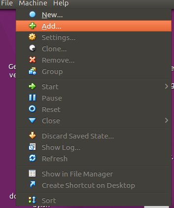
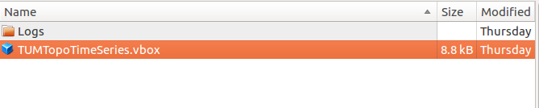
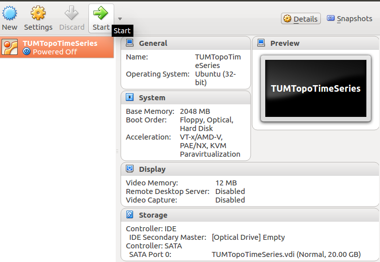
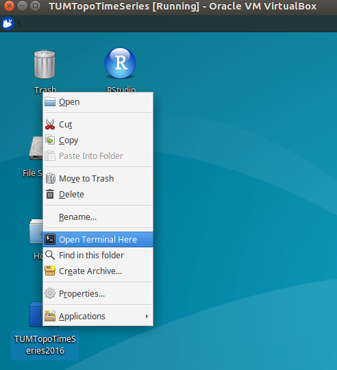

The groups "Topological Descriptors for Geometric Data" and "Topological Time Series Analysis - Theory and Practice" will be using a virtual image of XUbuntu 16.04 32-bit with packages pre-installed. The first group will be using R Studio with the TDA R Package, and the second group will be using Jupyter Notebook, which are all pre-installed on an image.
1. Installing VirtualBox
You will first need to download and install the VirtualBox client on your computer. Click here to go to the VirtualBox downloads page, and choose the file corresponding to your operating system
Once the three files are are all downloaded, you should then be able to open the image in VirtualBox. First, launch VirtualBox and click the menu item Machine->Add

Then, navigate to the folder where you downloaded the three files, and open the .vdi file:

Then, double click on the image to start it:

For the topological descriptors group, there is an icon for RStudio on the desktop. For the time series group, right click on TUMTopoTimeSeries2016 and click "Open Terminal Here"

Then, type
git pull
to update the files to the most recent version. After that, type
jupyter notebook
which will launch Jupyter Notebook in the browser automatically.
NOTE: If it is prohibitively slow, you may need to enable hardware virtualization in your BIOS, as shown in this video.